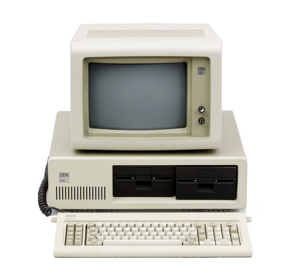

| 1837 |
Charles Babbage designs the Analytical Engine, the first concept of a general-purpose computer. |
 |
| 1941 |
Konrad Zuse creates the Z3, the first programmable digital computer. |
 |
| 1946 |
ENIAC, the first electronic general-purpose computer, is completed in the United States. |
|
| 1951 |
UNIVAC I, the first commercial computer, is delivered to the U.S. Census Bureau. |
 |
| 1971 |
Intel releases the 4004, the first microprocessor, marking the start of the microcomputer revolution. |
 |
| 1981 |
IBM introduces the IBM PC, which sets the standard for personal computers. |
 |
| 1984 |
Apple launches the Macintosh, the first successful personal computer with a graphical user interface. |
|
| 1991 |
Tim Berners-Lee introduces the World Wide Web, revolutionizing the way computers are used for communication. |
 |
| 2007 |
Apple releases the iPhone, combining a phone, computer, and internet device in one. |
 |
| 2011 |
IBM's Watson wins Jeopardy!, showcasing the advancements in AI and natural language processing. |
|
| 2023 |
AI and quantum computing continue to advance, with breakthroughs in speed, efficiency, and capabilities. |
 |